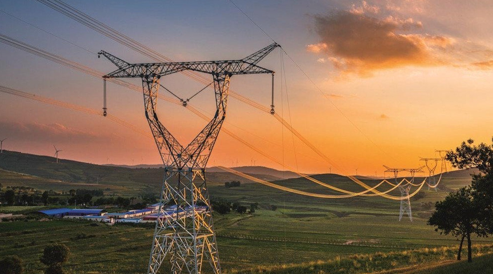
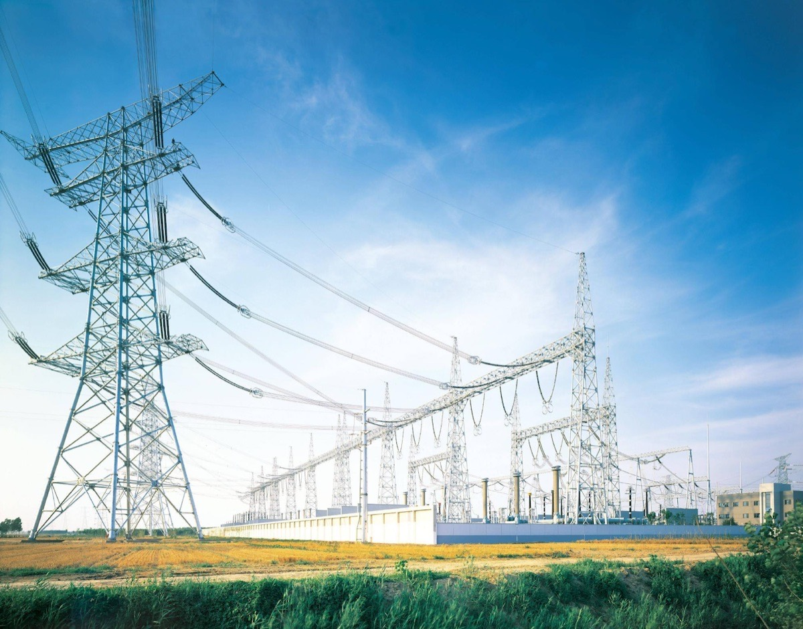
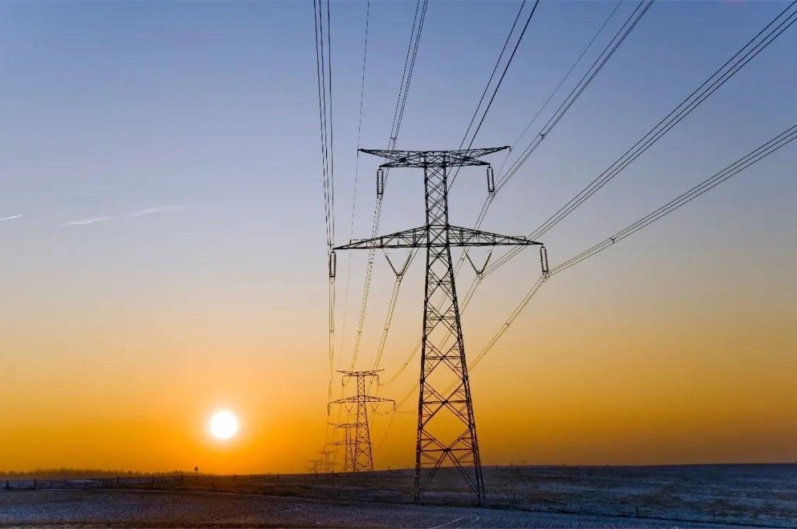

110kV 容白线跨越津保高铁桥拆除
服务内容
废旧 110kV 容白线（N68-N69）跨津保高铁桥段电力线拆除及跨越防护
工程特点
跨越运营高铁桥 K80+502、铁路路产保护要求严、限点施工
从高铁 / 电气化铁路跨越与迁改，到省道、港口铁路下穿防护，再到新能源送出与变电站配套工程，我们服务于国家电网、冀北电力、天津电力等业主单位，持续在高风险、强协同的场景中交付可控的电力施工方案。

废旧 110kV 容白线（N68-N69）跨津保高铁桥段电力线拆除及跨越防护
跨越运营高铁桥 K80+502、铁路路产保护要求严、限点施工

既有 10kV 配电线路 3#-4# 越铁路段拆除及现场恢复
铁路沿线作业、天窗点计划严格、跨部门协同

李各庄分支跨电气化铁路改造工程中跨越架搭设、配合改造与拆除
电气化铁路环境、邻近带电作业、限时点作业
通唐路西侧·南城东路南侧段 35kV 双回线路落线点安全防护与作业通道保障
城市道路施工同步、交通导改频繁、双回线协同
事故段接触网及供电设备抢险复旧施工
应急响应、10 天完工、24 小时连续作业
吴家牌 24 线路等绝缘化改造及跨铁路段架空改电缆入地敷设
跨运营铁路段、沟槽开挖与保电并行、多专业衔接
10kV 新出 11#~13# 线工程跨津蓟铁路段架空改电缆入地技术服务
变电站出线与区外通道协同、既有铁路不中断
多用途铝基新材料一期项目赤泥输送管线下穿既有港口铁路防护施工
港口铁路不停运、下穿段沉降监控、跨月长周期作业
灰场生态治理光伏项目 110kV 送出线路跨京包铁路跨越架搭拆与跨越施工
新能源送出、跨干线铁路、邻近带电环境
授权期内输电线路检修、跨越改造及配套工程的一揽子施工服务
全年框架协议、多点位并行调度、快速响应
垃圾焚烧电厂 110kV 送出线路跨越京沪高铁及京沪普速铁路施工保护与跨越架搭拆
同段双线跨越、高铁天窗点稀缺、路产路电多方联审
暂无该分类下的案例。